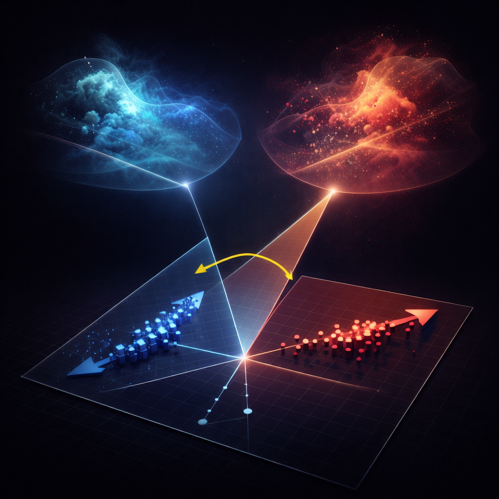
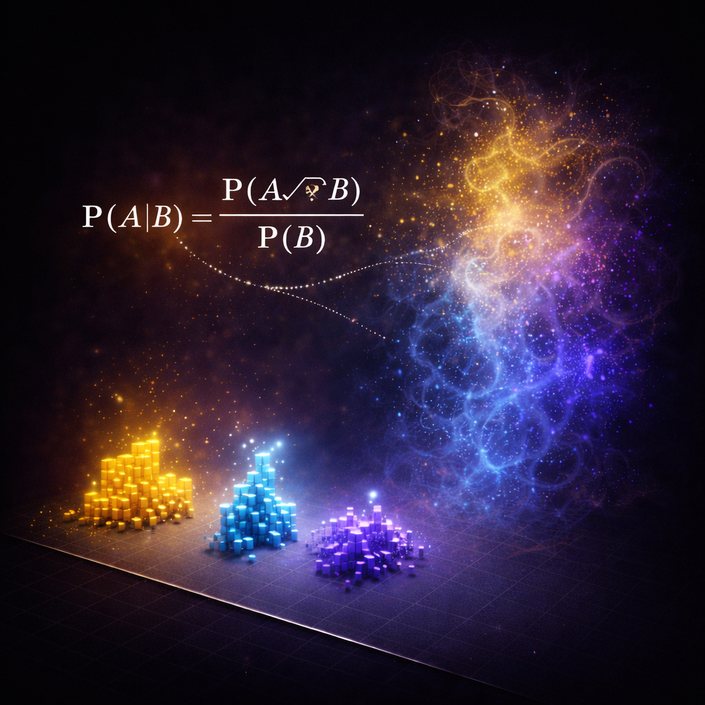

Projection: Data Does Not Preserve Structure
Like a shadow of a 3D object—you can’t tell the shape from the shadow alone.

Geometry: Correlation Is Just an Angle
Two arrows can form the same angle—even if they come from completely different systems.

Probability: Structure Imposed by Mathematics
Just because numbers multiply doesn’t mean events do.
Across psychology, neuroscience, and applied economics, many findings fail to replicate or disappear outside the lab. Even without fraud, statistically “significant” effects often fail to match real-world behavior. These breakdowns are not discipline-specific—they reflect a deeper mismatch between how real systems generate phenomena and how statistical inference interprets the data left behind.
In practice, statistics and causal inference operate entirely within data space. But data are projections of a much higher-dimensional system, and such projections do not preserve the original structure. Once mapped into data space, the properties of the underlying system are no longer retained, and the mechanism is not present in the observations.
Many failures stem from two assumptions: that alignment in data space reflects structure in the underlying system, and that probabilistic factorizations reveal the process that generated the outcomes. Yet these tools operate in a domain where the mechanism is no longer present, which is why they break even when used correctly.
Two foundational mistakes that pushed statistics and causal inference off course.
No mechanism → no grounding
Sparse data ≠ world structure
Projection, geometry, and probability fail for the same reason: they operate on representations that do not preserve the structure of the system.
A shadow is not the object
Angle is not relationship
No mapping to real-world events
Statistical and causal inference have become universal currencies of explanation across the sciences, especially where underlying mechanisms remain opaque. Their authority rests on the assumption that patterns in observed data can reveal the processes that generated them. Yet persistent mismatches between empirical findings and real-world behavior point to a deeper limitation: observed data are projections of underlying systems, not the systems themselves. Such projections need not preserve the structural or semantic properties of what they represent. As a result, operations on projected data cannot be assumed to correspond to operations on the original structure.
Statistical and causal inference often deepen this substitution by treating mathematical decomposition in the observed space as mechanistic decomposition of the system that produced it. But decompositions of projected data remain confined to the projected representation and are generally non-unique; they do not establish correspondence with the underlying mechanism. This reframes a central limit of modern inference: precision, fit, and decomposition within observed data are not evidence of mechanistic correspondence with the original structure.
Mechanistic understanding therefore requires either direct operation on the underlying structure, or operation through a representation whose mapping has been shown to preserve the relevant properties of the original system, such as a validated simulation.
These failures do not stay inside statistics. They propagate across every discipline that relies on data-space reasoning. Psychology, neuroscience, political science, and applied economics routinely draw conclusions from patterns that could never reveal how the system actually works. Entire literatures grow around correlations, regressions, and conditional probabilities whose quantities have no mechanism-level meaning.
Causal inference amplifies the problem. Its algebra multiplies probabilities into joint events that do not exist in real systems. Because observed variables are low-dimensional projections of a richer generative world, the true joint distribution is undefined—yet causal formulas fabricate it through factorization. The machinery operates on objects that have no semantic or generative counterpart in reality.
Machine learning and statistical learning theory inherit the same statistical ontology, but their actual behavior no longer matches their notation. Quantities like likelihoods, expected risk, factorizations, and losses survive as syntactic artifacts, even though the true system has no mechanism that corresponds to them. Models work through optimization heuristics and implementation patches, not through the semantics their formulas suggest. What runs in practice is not what the notation claims.
That is why the foundation must be rebuilt. As long as inference is performed in data space, every downstream field will continue scaling the same structural error — operating on quantities that do not correspond to the systems they aim to explain.
@misc{diau_2026_19867923,
author = {Diau, Egil},
title = {Rethinking Statistics and Causality: Why
Mechanisms Cannot Be Inferred from Projected Data
Distributions
},
month = apr,
year = 2026,
publisher = {Zenodo},
doi = {10.5281/zenodo.19867923},
url = {https://doi.org/10.5281/zenodo.19867923},
}